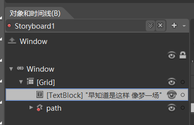

[WPF+Blend+FunUI]探照灯
参考大神的教程，主要是为了熟悉blend的操作，学习动画效果 教程
使用的软件：Microsoft Expression Blend4
因为做的过程没有截图，所以就把实现方法描述一下

控件组成就是一个TextBlock和Path，其中Path由一个矩形和椭圆形组成。
矩形要够长，足够圆形部分移动到每一个字，且圆形以外的部分被矩形覆盖，矩形有要一定的透明度，不然就一个⚪不好看。
这个Path的绘制：1.先画一个透明度80%的矩形作为覆盖层，然后在文字旁边画一个和文字等高或大于文字高度适量的⚪； 2.在对象和时间线窗口里选中矩形，然后按住shift，再选中圆形，右键菜单选择合并->相减。
！！！注意一定要先选中矩形，然后一定要先画矩形。
接下来只要选中path 按这里的＋号，添加了一个动画。下面只要选中时间轴，然后吧path放到想放的地方就好了